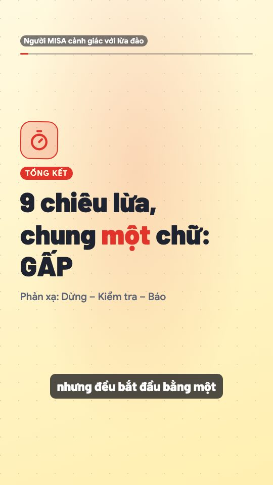
1hook3.8s
Chín chiêu lừa khác nhau, nhưng đều bắt đầu bằng một chữ: gấp.
♪ impact · whoosh

Chín chiêu lừa khác nhau, nhưng đều bắt đầu bằng một chữ: gấp.
♪ impact · whoosh
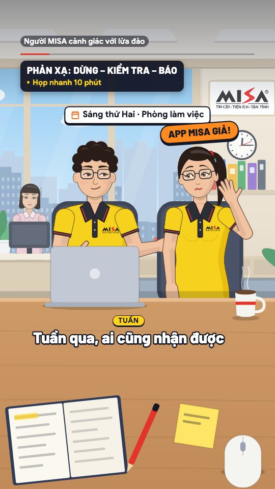
Sáng thứ Hai, Tuấn gọi cả nhóm họp nhanh mười phút.
Tuần qua, ai cũng nhận được tin nhắn lạ, đúng không?
Em suýt cài app MISA giả đấy anh!
♪ whoosh-soft · pop · whoosh
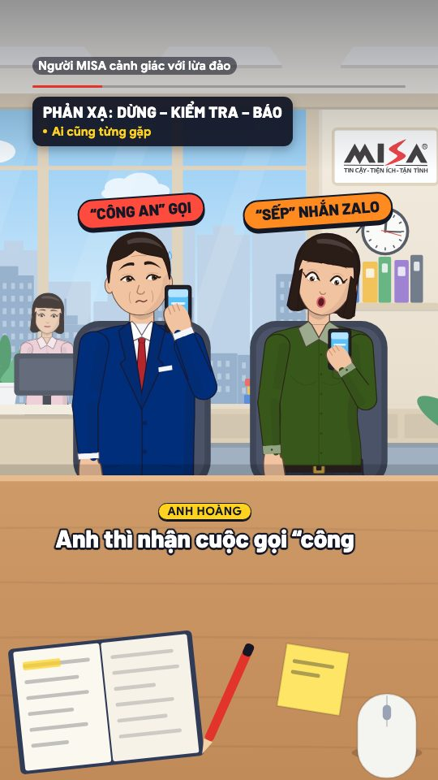
Anh thì nhận cuộc gọi “công an”, doạ dính vào vụ án.
Còn em nhận Zalo “sếp” nhờ chuyển tiền gấp!
♪ pop · whoosh
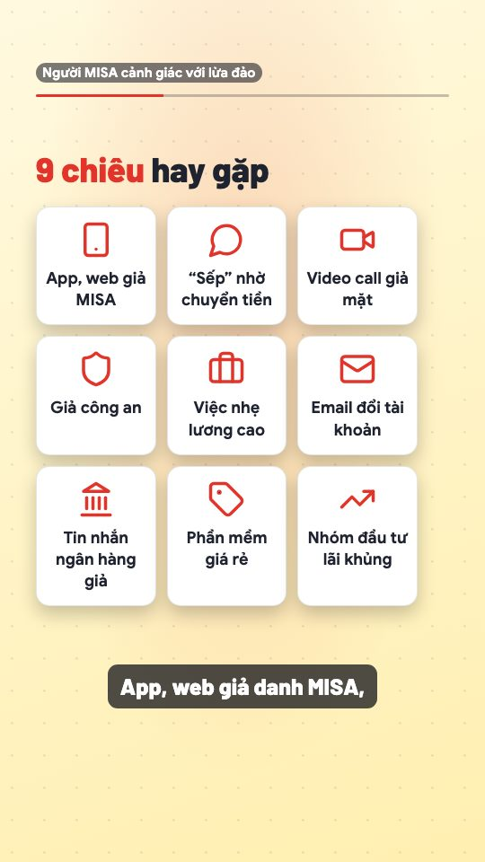
App, web giả danh MISA, “sếp” nhờ chuyển tiền, video call giả mặt.
Giả công an, việc nhẹ lương cao, email đổi số tài khoản.
Tin nhắn ngân hàng giả, phần mềm giá rẻ, nhóm đầu tư lãi khủng.
♪ whoosh · pop-high
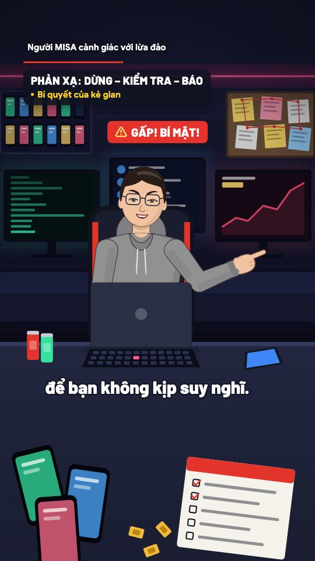
Cứ làm nó hoảng, là nó quên hỏi ai!
Kẻ gian luôn tạo áp lực, để bạn không kịp suy nghĩ.
♪ whoosh · error · alarm
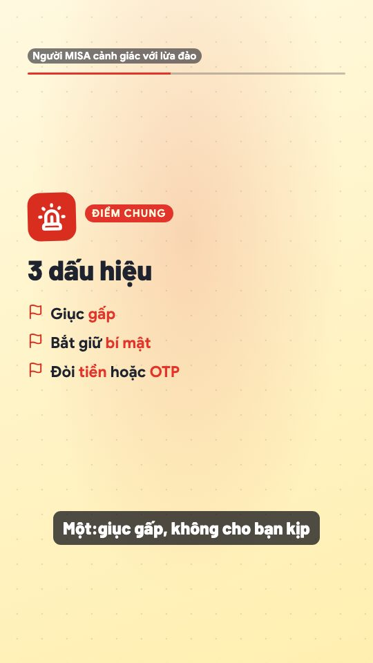
Một:giục gấp, không cho bạn kịp nghĩ.
Hai: dặn giữ bí mật, đừng hỏi ai.
Ba: đòi chuyển tiền, hoặc đọc mã OTP.
♪ alarm · tick · swoosh-up
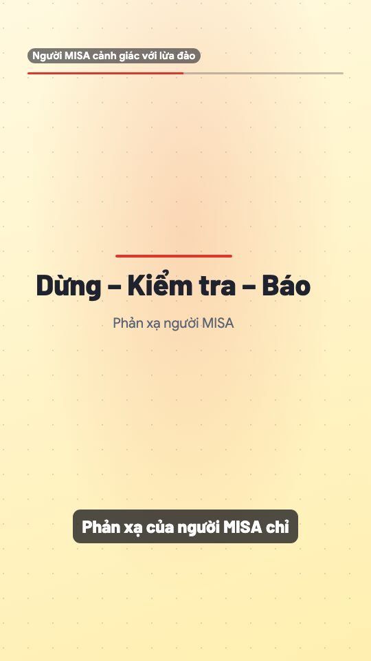
Phản xạ của người MISA chỉ có ba bước: dừng, kiểm tra, báo.
♪ swoosh-up · ding · whoosh
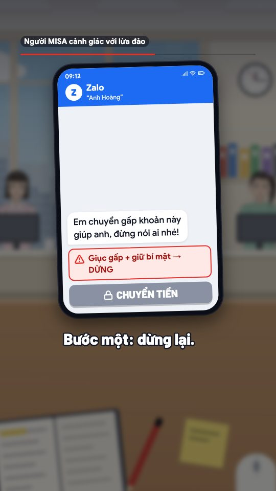
Bước một: dừng lại. Không bấm link, không chuyển tiền, không đọc OTP.
Tin càng giục gấp, càng dặn bí mật, càng phải dừng.
♪ swoosh-up · bubble · error · click · whoosh
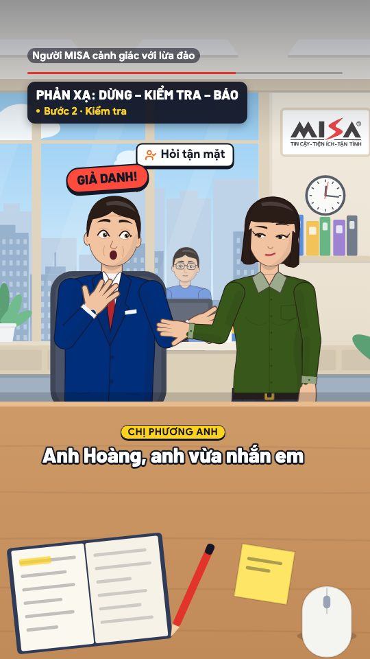
Bước hai: kiểm tra. Gọi lại số đã lưu, hoặc hỏi tận mặt.
Anh Hoàng, anh vừa nhắn em chuyển tiền ạ?
Không hề! Có kẻ giả danh anh đấy.
♪ whoosh-soft · pop · whoosh
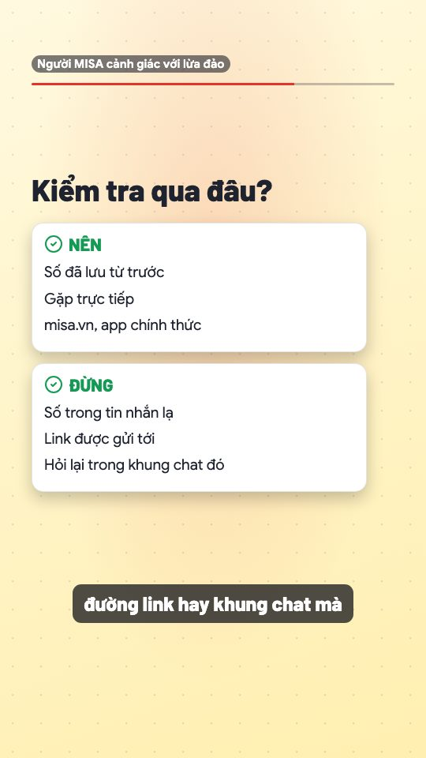
Kiểm tra qua kênh bạn đã biết từ trước.
Đừng dùng số, đường link hay khung chat mà người lạ gửi tới.
♪ tick · whoosh
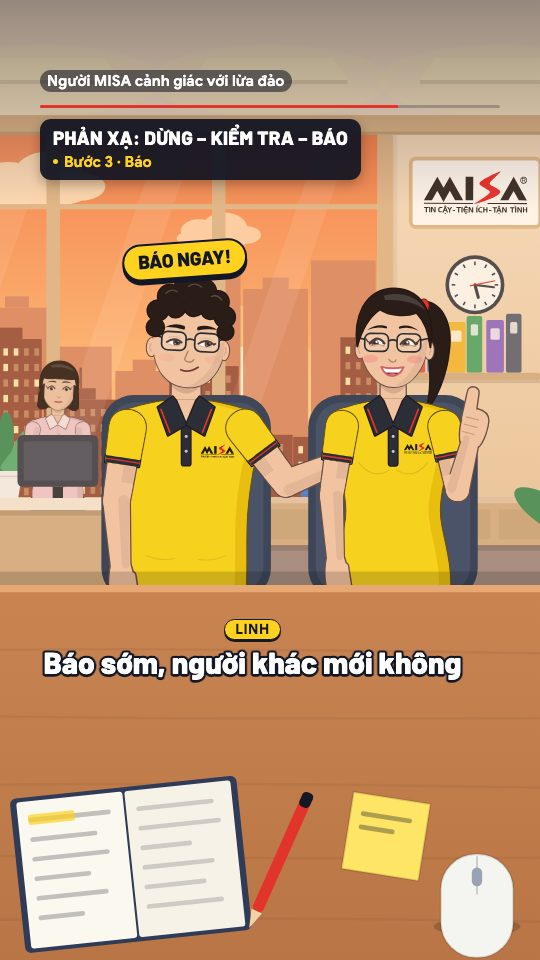
Bước ba: báo ngay cho quản lý và cả nhóm.
Báo sớm, người khác mới không sập bẫy!
♪ whoosh · pop
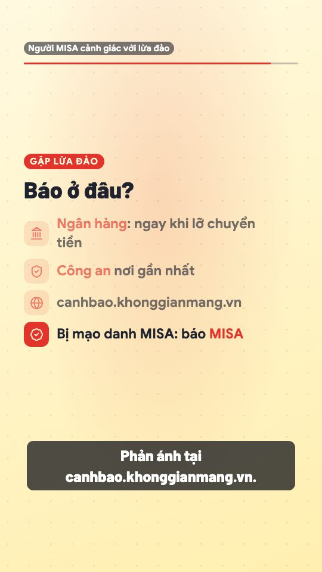
Lỡ chuyển tiền, gọi ngay ngân hàng để xin phong toả.
Trình báo công an nơi gần nhất.
Phản ánh tại canhbao.khonggianmang.vn.
Bị mạo danh MISA, báo ngay cho MISA qua kênh chính thức.
♪ whoosh · pop
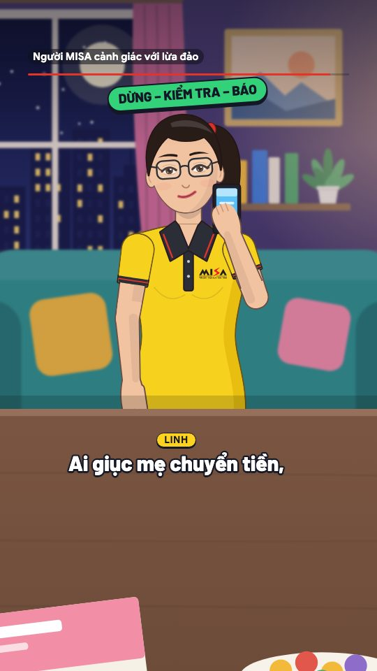
Ai giục mẹ chuyển tiền, mẹ cứ dừng lại, gọi con trước nhé!
♪ pop · whoosh
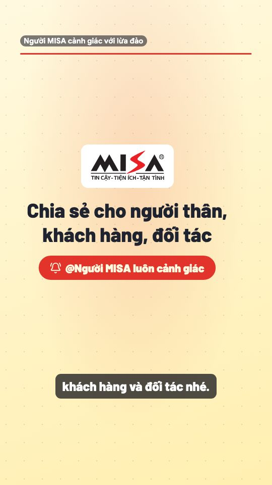
Hãy chia sẻ video này cho bạn bè, người thân, khách hàng và đối tác nhé.
♪ chime